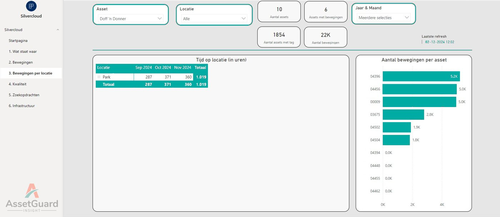

Nooit meer zoeken naar de tillift
Met AssetGuard ziet een zorgmedewerker in één zoekopdracht waar een hulpmiddel staat. Minder loopwerk, minder frustratie en meer tijd voor de cliënt. Voor de organisatie levert het inzicht op in gebruik, onderhoud en investeringen.
Zoeken kost de zorg meer dan u denkt
Hulpmiddelen worden gedeeld door teams en afdelingen en staan zelden op een vaste plek. Bij Argos Zorggroep bleek uit een nulmeting dat ongeveer een kwart van de werktijd opging aan het zoeken naar spullen.
Tijd
Een rondje door een groot verpleeghuis kost al snel een half uur. Tijd die van de cliënt afgaat.
Kwaliteit en veiligheid
Hulpmiddelen die niet te vinden zijn, missen hun onderhoud. Bij een recall weet u niet waar ze staan.
Kosten
Zonder inzicht in gebruik wordt er bijgekocht of gehuurd, terwijl er elders hulpmiddelen ongebruikt in de kast staan.
Een tag op het hulpmiddel, een app in de hand
Taggen
Samen bepalen we welke hulpmiddelen een Bluetooth-tag (BLE) krijgen en welk type tag het beste past.
Uw netwerk benutten
We inventariseren uw wifi-accesspoints. Waar nodig maken we het netwerk geschikt, in overleg met uw netwerkbeheerder.
Zoeken en vinden
Typ bijvoorbeeld “tillift” in de app op telefoon of tablet en zie direct de actuele locaties.
Scannen
Scan de QR-code op de tag voor de laatste onderhoudsdatum en gebruiksinstructies.
Begin met vinden, groei naar regie
AssetGuard bestaat uit modules die u stap voor stap inzet. Alles wordt geleverd als ontzorgende dienst, in samenwerking met Blyott.
AssetGuard Snelvinden
De kernmodule: realtime locatie, status en beschikbaarheid van bedden, tilliften, rolstoelen, infuuspompen, maar ook laptops of VR-brillen. Afhankelijk van uw accesspoints filtert de AssetGuard Proxyserver de Bluetooth-signalen, zodat er geen onnodig dataverkeer ontstaat.
AssetGuard Integratie (TOPdesk)
Een tweerichtingskoppeling met TOPdesk Asset Management. Locatie, temperatuur en batterijstatus komen in TOPdesk, en onderhoudsgegevens uit TOPdesk zijn zichtbaar in de app. Een tag koppelt u in twee seconden via een QR-scan. Is TOPdesk nog niet ingericht? Dan helpt TOPdesk Get Ready u op weg.
AssetGuard Insight
Power BI-dashboards in uw eigen huisstijl: gebruiksgraad, beschikbaarheid, onderhoudsstatus, zoekgedrag en batterijstatus. Ook zichtbaar: hoe vaak een tilband is gewassen of dat een medicijnkar een temperatuurgrens heeft overschreden.
Advies, training en consultancy
Hulp bij een hulpmiddelenstrategie, projectmanagement van initiatie tot oplevering, inrichting van TOPdesk Asset Management en adoptiebegeleiding op de werkvloer.
In ontwikkeling: AssetGuard Workflow, voor geautomatiseerde werkprocessen en taakbeheer rond hulpmiddelen.
Van onderbuikgevoel naar onderbouwde keuzes
Zijn er echt te weinig tilliften, of staan ze op de verkeerde plek? Insight laat het zien.

Resultaat voor de hele organisatie
Zorgmedewerker
Weet in seconden waar het hulpmiddel staat en loopt er in één keer naartoe.
Manager en facilitair
Ziet wat niet of nauwelijks wordt gebruikt en onderbouwt investeringen met data.
Cliënt
Wordt sneller geholpen, omdat de medewerker minder lang weg is om iets te zoeken.
“Je ziet dat medewerkers die het systeem een paar keer hebben gebruikt, niet meer zonder willen.”
Goed om te weten
Hoe wordt AssetGuard geleverd?
Als dienst (SaaS) met 24/7 monitoring en een Nederlandstalige helpdesk tijdens kantooruren. Bij een storing herstelt het systeem zichzelf automatisch.
Wat als er hulpmiddelen of kamers bijkomen?
Nieuwe hulpmiddeltypes, accesspoints, tagtypes en kamernummerwijzigingen zijn inbegrepen in de dienstverlening, zonder extra kosten.
Wat kost het?
De implementatie heeft een vast tarief: inventarisatie van het netwerk, installatie, configuratie en een dag ondersteuning voor gebruikers en beheerders. Daarnaast betaalt u een maandbedrag. Voor Insight is per gebruiker een Power BI Pro-licentie nodig. Actuele prijzen ontvangt u op aanvraag.
Wat is het verschil met Lokalisatie & Leefcirkels?
AssetGuard richt zich op hulpmiddelen. Lokalisatie & Leefcirkels (powered by Evresys) richt zich op cliënten en medewerkers: alarmering, lokalisatie en persoonlijke leefcirkels. Beide sluiten op elkaar aan.
Ook meer tijd voor goede zorg?
We helpen u graag met het opzetten van een pilot op één locatie.